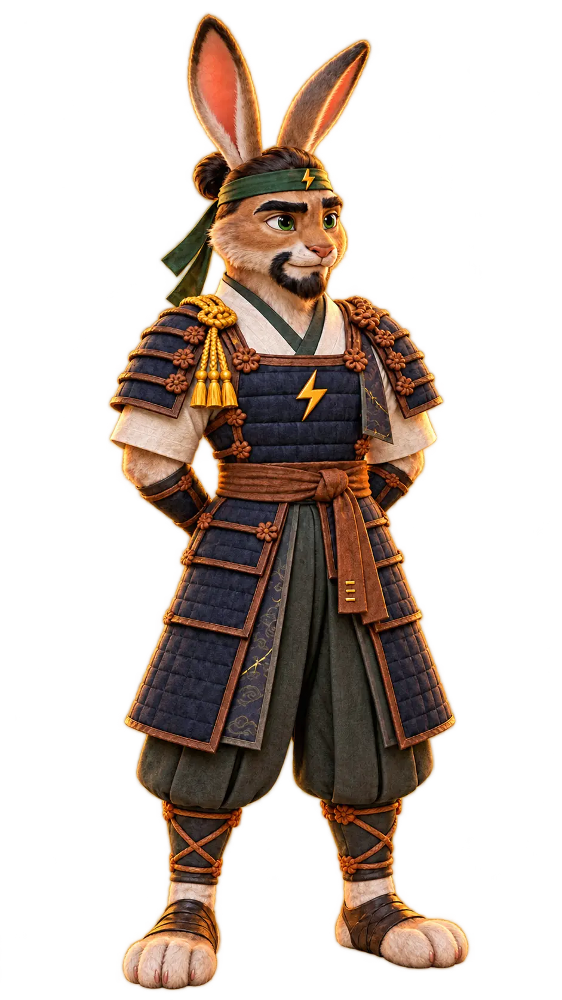

גרסאות עיפרון
ראיקה וסנסיי ראי — עיבוד מונוכרומטי מתוך הרפרנסים הקנוניים של הדמויות

סנסיי ראי
תצוגת עיפרון זמנית המבוססת על תמונות המקור; ציורי הגרפיט שנוצרו בנפרד עדיין לא הועלו כקבצים.
ראיקה וסנסיי ראי — עיבוד מונוכרומטי מתוך הרפרנסים הקנוניים של הדמויות

תצוגת עיפרון זמנית המבוססת על תמונות המקור; ציורי הגרפיט שנוצרו בנפרד עדיין לא הועלו כקבצים.